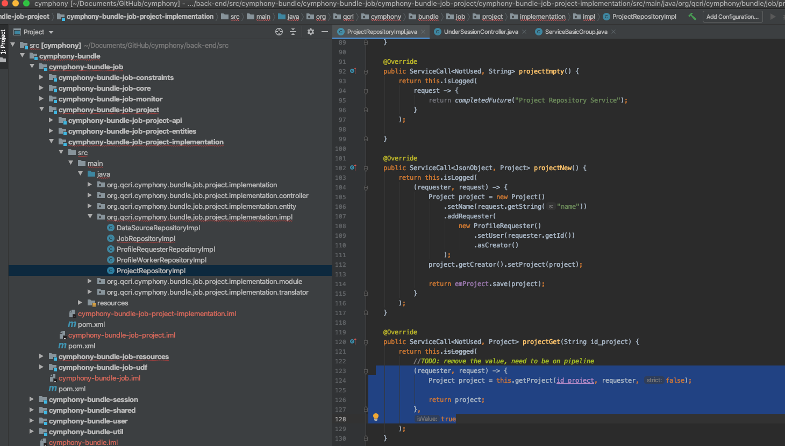

Example: User Session¶
When a user logs in the system, it will create a session for this user and this login. The session will be different next time the user is logged in. That is, for each login, it wil create a unique token. All other services need to validate this token so this worker can work. A user token may expire either after a user is logged out, or the user is idle for a certain time.
Hence, the two services, session and user, will always work together. More concretely, each time when a user is logged in, the user information will be managed by the user service, but the user token will be managed by the session service.
Next, we will explain how other services work, when a user (either a requester or a worker) interacts with other services.
As shown in the figure below:
(1) a requester wants to create a project;
(2) the project service will then interact with the session service to validate whether the requester’s token is valid; if not, it will returns some exceptions;
(3) if validated to be yes, the project service will then interact with user service to get more information about this requester, such as email, name, and so on;
(4) afterwards, the project service will interact with other services to create the project, e.g, the job service.
The rectangle part that includes (2) and (3) is called UnderSession.
Please refer to Authentication on the Back-End about how the authentication using tokens work in the back-end. Next, we will explain the APIs related to the above process.
Abstract APIs for UnderSession¶
The abstract implementations of the APIs are in UnderSessionController.java, under cymphony-bundle-shared-implementation-controller. These APIs define the operations inside UnderSession.
Implementation of UnderSession APIs in Validator¶
The real implementation of the APIs for UnderSession part, is in SessionValidator.java.
UDF with lambda function for Service Communication¶
Last, we give some examples for the interactions between other services (such as the step 4 above).
We can either use lambda functions or normal functions. But lambda functions are more concise and convenient.
1 2 3 4 5 6 7 8 9 10 11 12 13 14 15 16 17 | /* a normal function */
@Override
public ServiceCall<NotUsed, String> projectEmpty() {
return this.isLogged(
new ServerServiceCall<NotUsed, String>() {
@Override
public CompletionStage<String> invoke(NotUsed notUsed) {
return completedFuture("Project Repository Service");
}
}
);
}
/* a lambda function */
request -> {
return completedFuture("Project Repository Service");
}
|
Authentication on the Back-End¶
Note that Cymphony is a system that follows a microservice architecture. Hence, we need to use some protocol that uses a token as part of the authentication under the system, but also have the characteristic that allows the single login.
To this end, Cymphony uses a modification of JSON Web Signature, the adjustment is based on how it initially treats the token. It works as follow:
First, you need to request the token, which tells how to encrypt the password of the user that will be logged in the system.
Then, you need to send the request to log in to the system, where the password is encrypted as the algorithm required after everything is correct on the server-side.
The response will have 2 tokens, one token identifies the user and the other token is for the session.
After that process, the session has a duration of 15 minutes after the last request. Each request updates the end time of the session. That is, if a user is idle for more than 15 minuates, the user will be automatically logged out.
The HTTP requests under a session need to add to their headers the two token token-session and token-user obtained during the login process, to enable access to the system.
Authentication Guide (How to log).
For being under session, you need to get the tokens(token-session, token-user), you need to execute the entries bellow point in that order
The request Get Algorithm will have two attributes “seed (line 3)” and “token (line 4)”. The seed is a part of the encryption. The token is the identifier of the algorithm that needs to be returned on the login step, because the seed is different every time.
1 2 3 4 5 6 7 8 9 10 11 | {
"algorithm": "blowfish",
"seed": "CjmBmm4P4sHDxZsPjpcD8cmYYGZ4qlxwRibDxXkVBek=",
"token": "656758a6-02e1-4edd-9286-e31ba33bf6f9",
"time_out": {
"time_server": "2020-02-05T12:56:23.136",
"time_expiration_on_server": "2020-02-05T13:06:23.136",
"expiration_on_seg": 600,
"valid": true
}
}
|
The request “Log in” is at “user.user_uuid(line 6)” which is the token of the user.
The “token_session (line 2)” is the identifier of the session.
Both values are the component that needs to be added on the header as token-user and token-session.
1 2 3 4 5 6 7 8 9 10 11 12 13 14 | {
"token_session": "bb41e57d-1198-4d72-8f8b-15699aa77e7c",
"valid": true,
"user": {
"user_name": "example user",
"user_uuid": "34cdee3d-07de-4853-a0f7-34e6ed36d84c"
},
"time_out": {
"time_server": "2020-02-05T12:56:26.764",
"time_expiration_on_server": "2020-02-05T13:56:26.764",
"expiration_on_seg": 3600,
"valid": true
}
}
|
Other Request under a session
An example of the a request that needs to be under session is:
1 2 3 4 | curl --location --request {{request_type}} '{{request_path}}' \
--header 'token-session: bb41e57d-1198-4d72-8f8b-15699aa77e7c' \
--header 'token-user: 34cdee3d-07de-4853-a0f7-34e6ed36d84c' \
--data-row '{{the data here if is need}}'
|